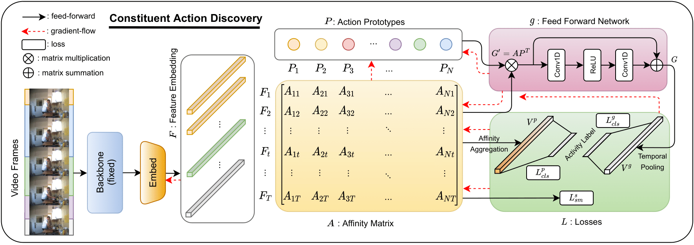

|  |
Guodong Ding and Angela Yao
National University of Singapore
The temporal action segmentation task segments videos temporally and predicts action labels for all frames. Fully supervising such a segmentation model requires dense frame-wise action annotations, which are expensive and tedious to collect.
This work is the first to propose a Constituent Action Discovery (CAD) framework that only requires the video-wise high-level complex activity label as supervision for temporal action segmentation. The proposed approach automatically discovers constituent video actions using an activity classification task. Specifically, we define a finite number of latent action prototypes to construct video-level dual representations with which these prototypes are learned collectively through the activity classification training. This setting endows our approach with the capability to discover potentially shared actions across multiple complex activities.
Due to the lack of action-level supervision, we adopt the Hungarian matching algorithm to relate latent action prototypes to ground truth semantic classes for evaluation. We show that with the high-level supervision, the Hungarian matching can be extended from the existing video and activity levels to the global level. The global-level matching allows for action sharing across activities, which has never been considered in the literature before. Extensive experiments demonstrate that our discovered actions can help perform temporal action segmentation and activity recognition tasks.
Files: [pdf]
Citation:
@article{ding2022temporal,
title={Temporal Action Segmentation with High-level Complex Activity Labels},
author={Ding, Guodong and Yao, Angela},
journal={IEEE Transactions on Multimedia},
year={2022}
}